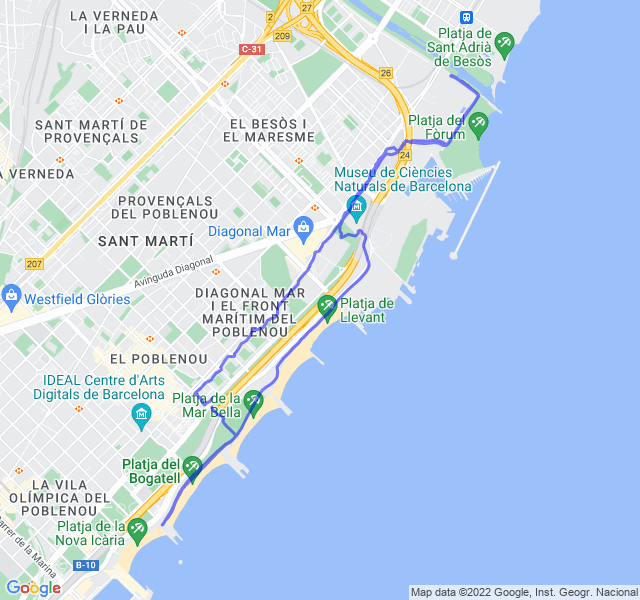

8km FM
| 1 min read
Poche nuvole, 21°C, Percepito 21°C, Umidità 60%, Vento 4m/s da SSO
Temevo un po' questo allenamento. Il Medio lo soffro sempre molto. Questa volta però è andata bene, fatica ma non troppa e anche un po' più veloce del previsto. Ho dovuto fare qualche sosta a causa dei semafori visto che il solito percorso era bloccato a causa di una manifestazione con poliziotti che sbarravano la strada.
Bene così!
